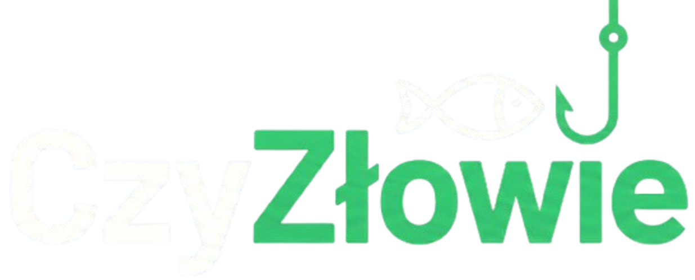

WRACAMY NA
PEŁNEJ MOCY.
Przepisujemy apkę od zera. Odrzucamy to, co nie działało. Skupiamy się na wydajności, precyzji i niezawodności nad wodą.
Zbudujmy to razem!
Chcesz mieć realny wpływ na to, jak będzie wyglądać nowa aplikacja? Wbijaj na naszego TikToka i zostaw komentarz ze swoim pomysłem na nową funkcję!
Zostaw pomysł na TikToku
CO WJEŻDŻA (NOWOŚCI)
Tryb Offline
Brak zasięgu w lesie lub na łódce? Żaden problem. Apka zapisuje dane w pamięci i synchronizuje je, gdy tylko odzyskasz sieć.
Historia + Pogoda
Dodajesz połów, a my z automatu przypinamy do niego historyczną i obecną pogodę (ciśnienie, wiatr, faza księżyca).
Interaktywne Mapy
Własne pinezki, ulubione łowiska i inne elementy. Szybkie wektorowe mapy, które chodzą jak złoto.
Ulepszona Prognoza i IMGW
Nowy algorytm braniowy i bezpośrednia integracja z danymi IMGW. Najświeższe stany wód i temperatura z oficjalnych stacji.
Z CZYM SIĘ ŻEGNAMY
Opisy miejscówek
Funkcja niemożliwa do rzetelnego utrzymania. Zmiany regulaminów, dzierżawców czy wysychanie wody sprawiały, że dane szybko traciły ważność. Od teraz skupiamy się wyłącznie na genialnych narzędziach ułatwiających łowienie, a nie na tworzeniu nieaktualnego katalogu.